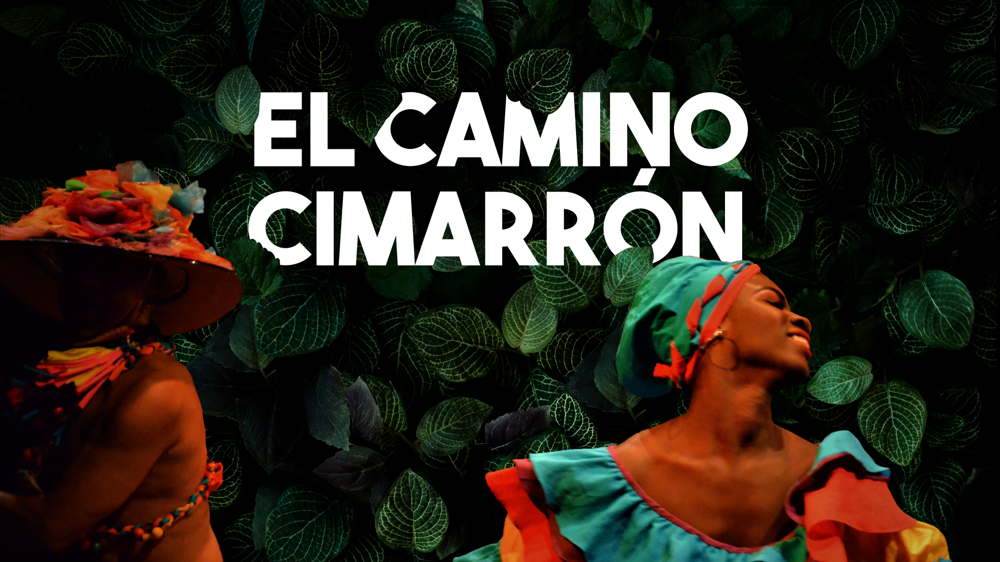
Dance / Immersive performance
El Camino Cimarrón
The journey
Katerine becomes an ambassador of the folkloric dances from Afro-Colombian Caribbean culture with her dance group “Sentimiento Cimarrón” in Barcelona, Spain. In this journey, we connect her artistic roots with Colombian landscapes, and music and dance experts.
The dancers
Sentimiento Cimarrón
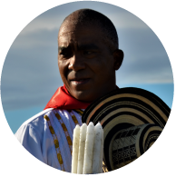
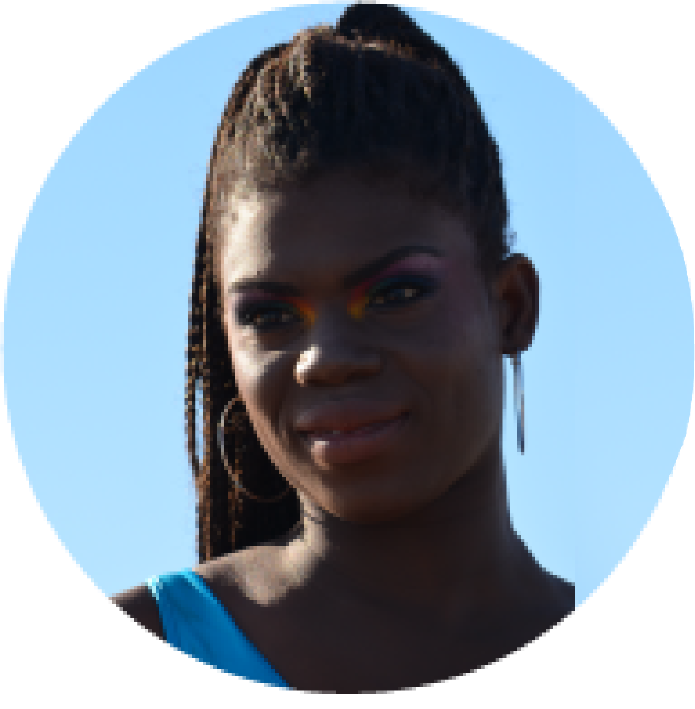
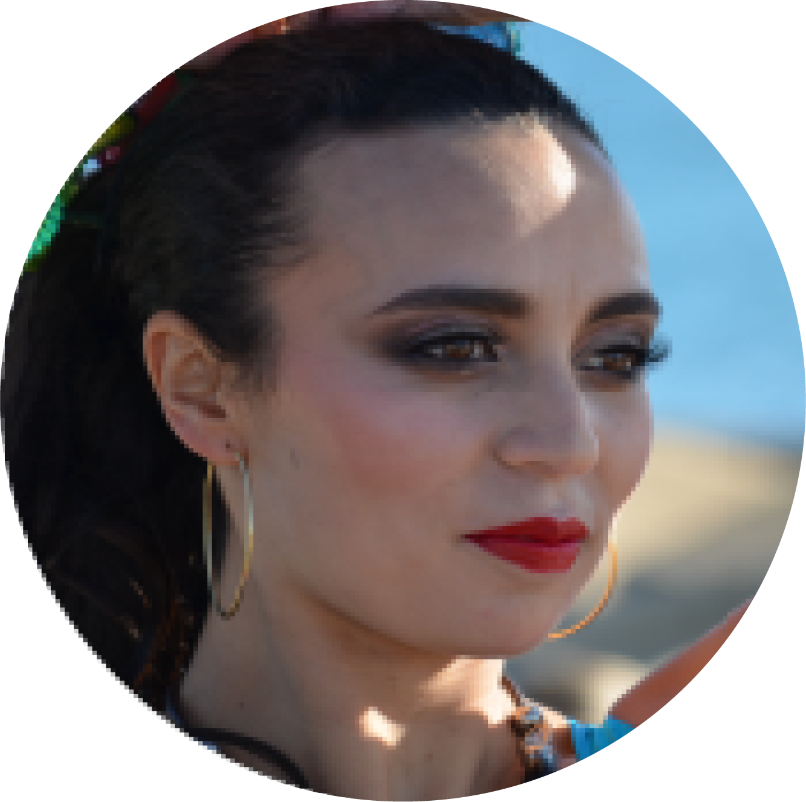
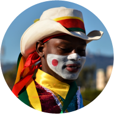
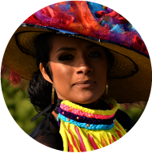
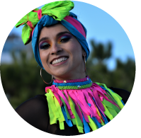
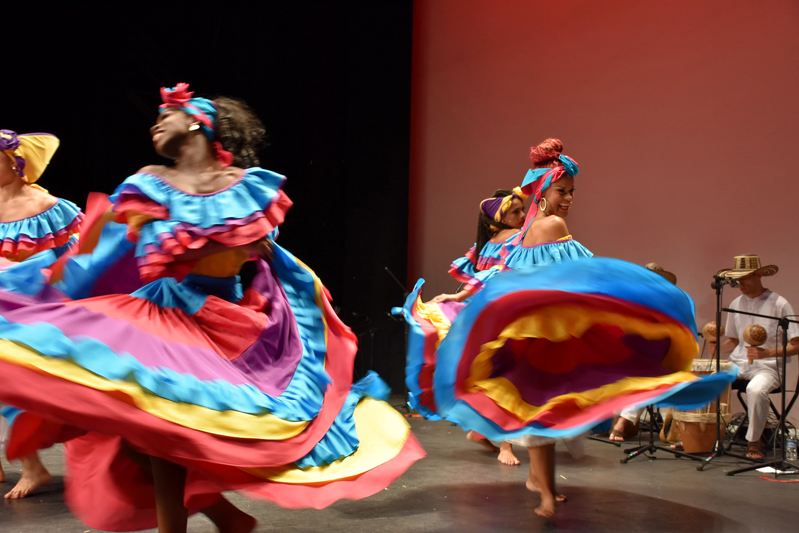
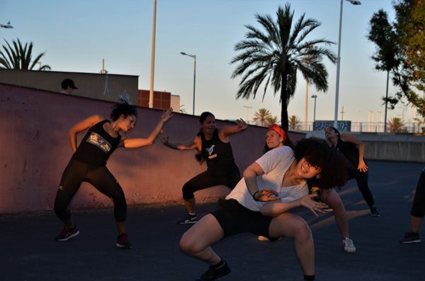
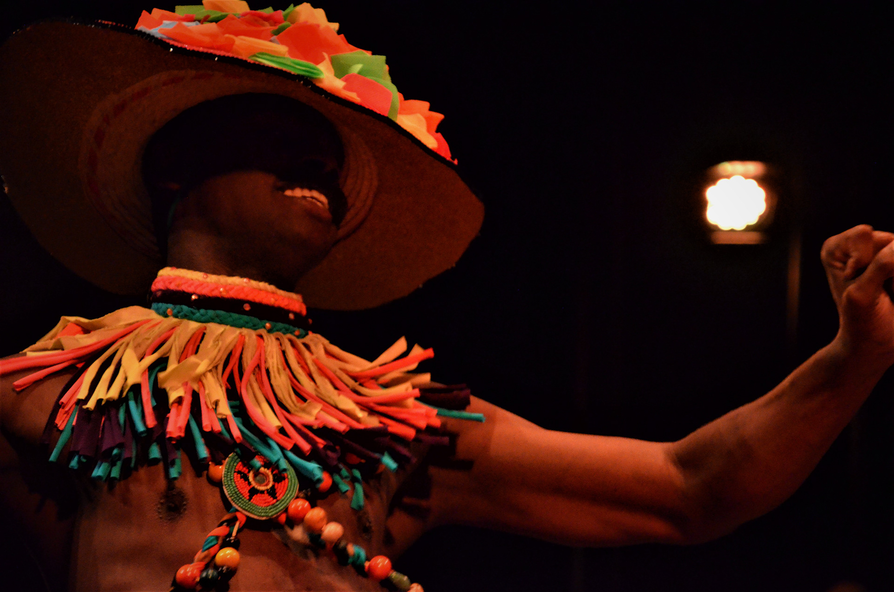
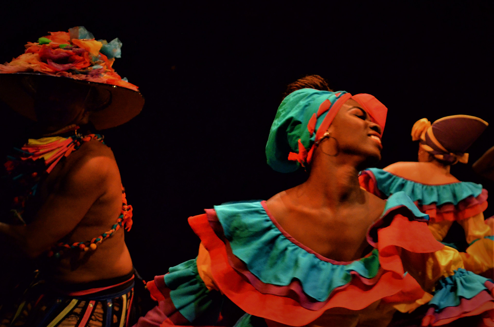
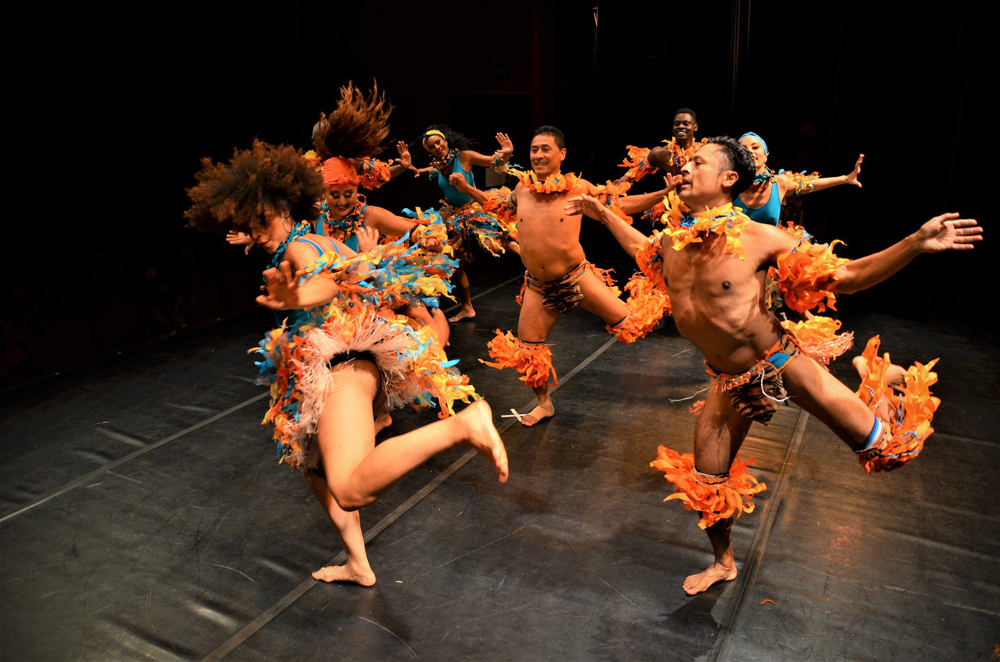
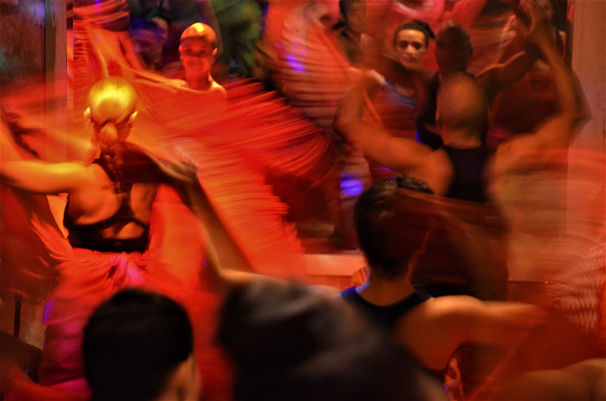
- Photos by
- Omar Hernández Sánchez
- Producers
- Rocío Rojas
Andrés Burbano - Choreographer
- Katerine Olivares
- Co-writer
- Juliana Otálvaro
- Director
- Sofía Angulo Ballén